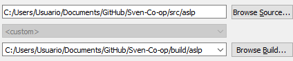
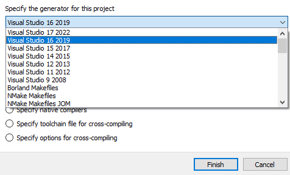
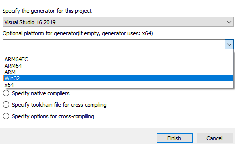
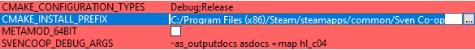
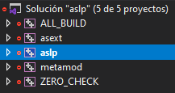

Setup
git clone https://github.com/Mikk155/Sven-Co-op.git
Metamod
If you want to contribute to the metamod plugin aslp you'll need additional dependancies
Enter the repository directory and install the dependancies
git submodule update --init --remote external/fmt
git submodule update --init --remote external/json
git submodule update --init --remote external/metamod
Generate the project solution from CMakeLists.
You can either configure yourself by command line or using CMakeGui
Command line:
mkdir build\aslp
cmake -S src/aslp -B build/aslp -G "Visual Studio 17 2022" -A Win32 -DCMAKE_INSTALL_PREFIX="C:/Program Files (x86)/Steam/steamapps/common/Sven Co-op"
CMakeGui setup:
Set the path to where the project is located and where to build the binaries.
Due to how aslp include files, it is not recommended to build the binaries in the same folder or sub-folders.
Press the "Configure" button and select your project generator
Select your platform and press finish (Note: Sven coop requires 32-bits build)
You can now set the path to your "Sven Co-op" installation and modify some launch parameters for when debuging
Press the "Generate" button and wait until is done, you can press then the "Open Project" to launch your IDE
Select the "aslp" project. right click and mark as "Startup project" so when you press F5 to debug it runs the game.
You may know be able to compile aslp and asext but to actually compile metamod you gonna need to go to the folder "external/metamod/scripts/" and run some dependancy scripts.
For instance you need the "build-capstone" Ideally both release and debug if you plan on building for both.
Go to the "svencoop/liblist.gam" file and modify the "gamedll" variable to load metamod
gamedll "addons/metamod/dlls/metamod.dll"
If you were running metamod previously go to "svencoop/addons/metamod/plugins.ini" and add the aslp entry. This is not necesary if the file didn't exists the project will generate it.
win32 addons/metamod/dlls/aslp.dll
linux addons/metamod/dlls/aslp.so
C# tools
Any C# program will most likely require the MikkNET submodule (Lack of imagination for a proper name lol)
git submodule update --init --remote external/MikkNET
AngelScript
I wrote the code-runner C# program for myself but you're free to compile and use it
cd src
cd code-runner
dotnet build code-runner.sln
Install the extension "Code Runner" linked bellow and it should install required assets into Sven Co-op
 Visual Studio Code recomended extensions
Visual Studio Code recomended extensions
| Name | Download | Description |
|---|---|---|
| Code Runner | Code Runner | Use to have a way to "Run" angelscript code. It will just copy over any required asset from a plugin/script to your sven coop installation. |
| Angelscript language server | Angelscript Language Server | AngelScript language server (Wip, please report issues on Github) |